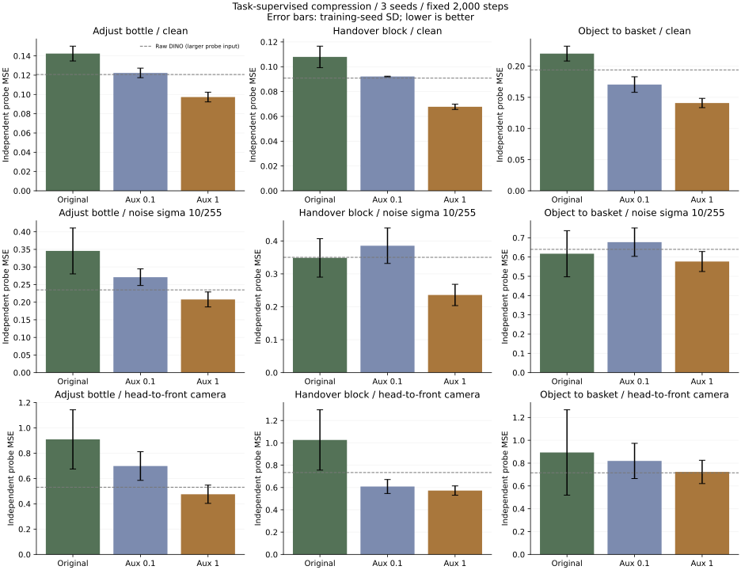

让压缩器学习
保留任务信息。
冻结 DINO，在相同的 48 维压缩器上增加当前观测到未来状态变化的辅助监督。27 次固定预算训练全部保留，使用独立读出器检验效果。
λ=1 改善位移读出，夹爪出现退化。
验证集选择的辅助权重为 1。相对同设置下的原损失，三个任务的干净状态变化预测误差低约 32%–37%，噪声下低约 7%–40%，换相机后低约 19%–48%。入篮任务噪声差异的配对区间跨过零，尚不能确认该项改善。以上均为离线读出误差。
选择依据是三个任务、三个种子的验证误差相对各自原损失对照的平均比值：λ=0：1.0000；λ=0.1：0.7992；λ=1：0.5597。比值越低越好；选择记录在本轮测试指标计算前保存。
λ=0.1：三个任务平均相对变化，干净 -17.1%，噪声 -0.4%，亮度 -18.7%，换相机 -24.0%。 λ=1：三个任务平均相对变化，干净 -35.0%，噪声 -26.3%，亮度 -37.4%，换相机 -37.0%。 正数表示误差更高。这里平均的是每个任务相对自身基线的变化，不是任务成功率。
先比较压缩前后可读出的信息
| 任务 | 原始 DINO / 干净 | 原 S-VAE / 干净 | 原始 DINO / 噪声 | 原 S-VAE / 噪声 |
|---|---|---|---|---|
| 瓶子调整 | 0.1207 | 0.1424 | 0.2349 | 0.3456 |
| 双臂交接 | 0.0908 | 0.1079 | 0.3503 | 0.3486 |
| 物体入篮 | 0.1940 | 0.2201 | 0.6400 | 0.6172 |
同样仅取当前帧，以 2×2 网格汇总；特征与目标标准化只使用训练轨迹，正则化只由验证集选择。原始 DINO 与压缩器的读出输入维数不同，因此这是诊断对照，不能直接解释为“压缩造成了全部差异”。
独立读出器的完整对照
目标是四个原始时间步后的末端位移与夹爪状态，不是控制命令。训练辅助头只读取当前潜变量和当前本体状态；评价时丢开这个头，冻结编码器并重新拟合线性 ridge probe。

误差条为三个训练种子的标准差。虚线为原始 DINO；其 probe 输入更大，不是等容量策略比较。
| 任务 | 辅助权重 λ | 干净 MSE | 噪声 MSE | 亮度 MSE | 特征重建 MSE |
|---|---|---|---|---|---|
| 瓶子调整 | 0 | 0.1424 ± 0.0077 | 0.3456 ± 0.0652 | 0.1508 ± 0.0096 | 0.1303 ± 0.0011 |
| 瓶子调整 | 0.1 | 0.1223 ± 0.0049 | 0.2710 ± 0.0236 | 0.1264 ± 0.0057 | 0.1329 ± 0.0006 |
| 瓶子调整 | 1 | 0.0973 ± 0.0051 | 0.2078 ± 0.0213 | 0.0990 ± 0.0044 | 0.1449 ± 0.0006 |
| 双臂交接 | 0 | 0.1079 ± 0.0087 | 0.3486 ± 0.0585 | 0.1218 ± 0.0091 | 0.1228 ± 0.0018 |
| 双臂交接 | 0.1 | 0.0921 ± 0.0002 | 0.3855 ± 0.0539 | 0.1021 ± 0.0028 | 0.1248 ± 0.0017 |
| 双臂交接 | 1 | 0.0677 ± 0.0021 | 0.2359 ± 0.0324 | 0.0739 ± 0.0011 | 0.1355 ± 0.0012 |
| 物体入篮 | 0 | 0.2201 ± 0.0120 | 0.6172 ± 0.1197 | 0.2378 ± 0.0239 | 0.1562 ± 0.0012 |
| 物体入篮 | 0.1 | 0.1705 ± 0.0125 | 0.6773 ± 0.0737 | 0.1817 ± 0.0118 | 0.1595 ± 0.0010 |
| 物体入篮 | 1 | 0.1409 ± 0.0075 | 0.5767 ± 0.0519 | 0.1465 ± 0.0064 | 0.1751 ± 0.0025 |
末端位移与夹爪分开检查
下面是干净输入的两个预测分量；夹爪按数据集状态单位计算，不能解释为接触力。
| 任务 | λ | 末端位移 RMSE / mm | 夹爪状态 RMSE |
|---|---|---|---|
| 瓶子调整 | 0 | 7.2440 ± 0.2441 | 0.0681 ± 0.0101 |
| 瓶子调整 | 0.1 | 6.7703 ± 0.1419 | 0.0726 ± 0.0133 |
| 瓶子调整 | 1 | 6.0572 ± 0.1688 | 0.0690 ± 0.0017 |
| 双臂交接 | 0 | 6.5499 ± 0.3631 | 0.0355 ± 0.0005 |
| 双臂交接 | 0.1 | 5.9921 ± 0.0274 | 0.0413 ± 0.0010 |
| 双臂交接 | 1 | 5.1270 ± 0.0928 | 0.0448 ± 0.0040 |
| 物体入篮 | 0 | 9.7843 ± 0.3227 | 0.0668 ± 0.0078 |
| 物体入篮 | 0.1 | 8.5637 ± 0.3473 | 0.0668 ± 0.0025 |
| 物体入篮 | 1 | 7.8026 ± 0.2281 | 0.0731 ± 0.0027 |
相对原损失的配对差异与区间
先对三个固定训练种子平均，再按同一组测试轨迹做 10,000 次配对 bootstrap。区间条件于这些种子，不包含全部训练随机性。正数表示更差。
| 任务 | λ / 输入 | 相对变化 | MSE 差值 [95% 区间] |
|---|---|---|---|
| 瓶子调整 | 0.1 / 干净 | -14.1% | -0.0201 [-0.0289, -0.0095] |
| 瓶子调整 | 0.1 / 噪声 | -21.6% | -0.0746 [-0.1415, -0.0088] |
| 瓶子调整 | 0.1 / 亮度 | -16.2% | -0.0244 [-0.0335, -0.0122] |
| 瓶子调整 | 0.1 / 视角 | -23.1% | -0.2104 [-0.3260, -0.0842] |
| 瓶子调整 | 1 / 干净 | -31.7% | -0.0451 [-0.0533, -0.0349] |
| 瓶子调整 | 1 / 噪声 | -39.9% | -0.1378 [-0.1941, -0.0844] |
| 瓶子调整 | 1 / 亮度 | -34.4% | -0.0518 [-0.0629, -0.0373] |
| 瓶子调整 | 1 / 视角 | -47.7% | -0.4336 [-0.5311, -0.3229] |
| 双臂交接 | 0.1 / 干净 | -14.6% | -0.0158 [-0.0232, -0.0088] |
| 双臂交接 | 0.1 / 噪声 | +10.6% | +0.0370 [+0.0125, +0.0600] |
| 双臂交接 | 0.1 / 亮度 | -16.2% | -0.0197 [-0.0269, -0.0137] |
| 双臂交接 | 0.1 / 视角 | -40.6% | -0.4171 [-0.4728, -0.3619] |
| 双臂交接 | 1 / 干净 | -37.3% | -0.0402 [-0.0467, -0.0346] |
| 双臂交接 | 1 / 噪声 | -32.3% | -0.1126 [-0.1513, -0.0762] |
| 双臂交接 | 1 / 亮度 | -39.4% | -0.0480 [-0.0555, -0.0419] |
| 双臂交接 | 1 / 视角 | -44.2% | -0.4538 [-0.4987, -0.4111] |
| 物体入篮 | 0.1 / 干净 | -22.6% | -0.0497 [-0.0722, -0.0258] |
| 物体入篮 | 0.1 / 噪声 | +9.7% | +0.0600 [-0.0526, +0.1708] |
| 物体入篮 | 0.1 / 亮度 | -23.6% | -0.0561 [-0.0835, -0.0299] |
| 物体入篮 | 0.1 / 视角 | -8.3% | -0.0741 [-0.2261, +0.0862] |
| 物体入篮 | 1 / 干净 | -36.0% | -0.0792 [-0.1048, -0.0534] |
| 物体入篮 | 1 / 噪声 | -6.6% | -0.0405 [-0.1489, +0.0698] |
| 物体入篮 | 1 / 亮度 | -38.4% | -0.0913 [-0.1170, -0.0673] |
| 物体入篮 | 1 / 视角 | -19.1% | -0.1704 [-0.2440, -0.0871] |
另保留只用本体状态、打乱视觉的诊断，详见完整 JSON。打乱图像会制造不一致观测，只能用于检查视觉依赖，不能当作真实传感器扰动。
夹爪退化是否只是读出器选择造成？
发现夹爪退化后，补做了一个明确标记为事后分析的 CPU 诊断：分别为位移和夹爪拟合读出器，各自只在验证集选 ridge 正则化。没有重新训练表征，也没有改变主实验的 λ 选择或替换主结果。
| 任务 | 位移 RMSE 变化 | 夹爪 RMSE 变化 |
|---|---|---|
| 瓶子调整 | -14.6% | +9.5% |
| 双臂交接 | -21.7% | +13.7% |
| 物体入篮 | -18.2% | +13.4% |
分开读出后，夹爪误差仍高约 10%–14%。因此，共用一个正则化参数不足以解释这一退化。它仍不等于证明夹爪信息已不可逆丢失；需要进一步区分目标取舍、读出能力和可观测性。
下一项小改动应测试位移与夹爪监督的分组权重，并保留本轮方案作为基线；同时使用新轨迹验证，避免继续在已观察的测试集上调参。实际接触阶段收益仍需要有效标签与闭环执行。
下载独立分组读出诊断真实相机对：同一状态，换一个视角
把同步的 front_camera 图像放入原 head_camera 位置，保持两路腕部图像、本体状态和标签不变。读出器仍只在原 head 视角训练，不针对 front 重拟合。这个附加诊断在训练期间、查看本轮测试指标之前登记；不改变任何训练或权重选择。
| 任务 | λ | 匹配重编码的 head MSE | front 替换 MSE | front / head 误差比 |
|---|---|---|---|---|
| 瓶子调整 | 0 | 0.1424 ± 0.0077 | 0.9091 ± 0.2341 | 6.35× |
| 瓶子调整 | 0.1 | 0.1223 ± 0.0049 | 0.6987 ± 0.1133 | 5.71× |
| 瓶子调整 | 1 | 0.0973 ± 0.0051 | 0.4755 ± 0.0721 | 4.91× |
| 双臂交接 | 0 | 0.1079 ± 0.0087 | 1.0261 ± 0.2706 | 9.48× |
| 双臂交接 | 0.1 | 0.0921 ± 0.0002 | 0.6090 ± 0.0627 | 6.61× |
| 双臂交接 | 1 | 0.0677 ± 0.0021 | 0.5723 ± 0.0418 | 8.47× |
| 物体入篮 | 0 | 0.2201 ± 0.0120 | 0.8934 ± 0.3740 | 4.00× |
| 物体入篮 | 0.1 | 0.1705 ± 0.0125 | 0.8193 ± 0.1545 | 4.78× |
| 物体入篮 | 1 | 0.1409 ± 0.0075 | 0.7230 ± 0.1021 | 5.12× |
这是 head 视角训练的固定读出器在另一相机上的迁移，不是连续的小幅视角扰动。误差不能单独归因为编码器丢失信息；原读出器对新投影的适应性也会影响结果。候选换相机后的误差仍约为同一模型 head 视角的 4.9–8.5 倍，尚未解决视角敏感性。头部相机重编码与原始缓存的最大特征差为 0；配对 head 对照用于区分相机变化和数值变化。
数值与数据控制
- 每个任务单独训练压缩器，尚未验证共享多任务模型。按轨迹固定 35/5/10 训练、验证、测试划分；每任务 50 条示范、600 个短片。归一化与辅助标签统计只用训练轨迹。
- 全部条件启用相同的确定性设置，重新训练九个原损失对照。与旧设置下检查点的最大参数差为 0.0125721，本轮效果以新对照为准。
- 启动前检测到原损失重复反传也有微小差异；隔离后启用确定性 CUDA 设置。2×2 池化使用相同区域的 reshape + mean，以支持确定性反传，并检查与原池化前向在 1e-6 容差内一致。
- 零权重与原损失梯度在本轮设置下完全一致；辅助梯度只读取当前 latent，能到达编码器；改变未来输入不影响当前特征；测试标签变化不影响训练统计。
- 所有方法使用相同的测试扰动缓存。它们从未用于拟合压缩器、辅助头或读出器。最终扰动结果按干净路径匹配压缩器 B=2、T=3 的批量形状；全部测试当前向量控制的最大差为 0，原 T=1 编码与 T=3 的首批最大差为 0。这项检查没有发现本轮扰动结果受压缩器批量形状影响。保留最初评测供审计，最终仅采用匹配形状的结果。
- 没有更改训练步数来追逐正结果，没有筛掉种子。额外加入固定相机对迁移，但没有连续视角扫描或经过核验的接触标签。
主实验总运行时间 22.9 分钟，包含检查、读取缓存、训练和初次评测；追加视角与数值诊断 1.4 分钟；不含此前数据下载与特征抽取。这不是完整 WAM 策略的资源测量。
复现与下一步
复用上一轮已抽取的特征与匹配批量的扰动缓存。脚本包包含本轮驱动、汇总脚本及其本地模块依赖；环境与数据准备见上一轮复现说明。模型检查点保留在实验存储中，不嵌入网页。
压缩器改变后，原策略的潜空间兼容性仍需验证。只有在新轨迹上保留收益，并在等预算策略适配后提高闭环成功率，才建议把辅助监督作为可选模型改动贡献。独立评测工具仍保持单独可审阅。